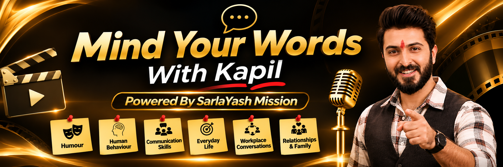
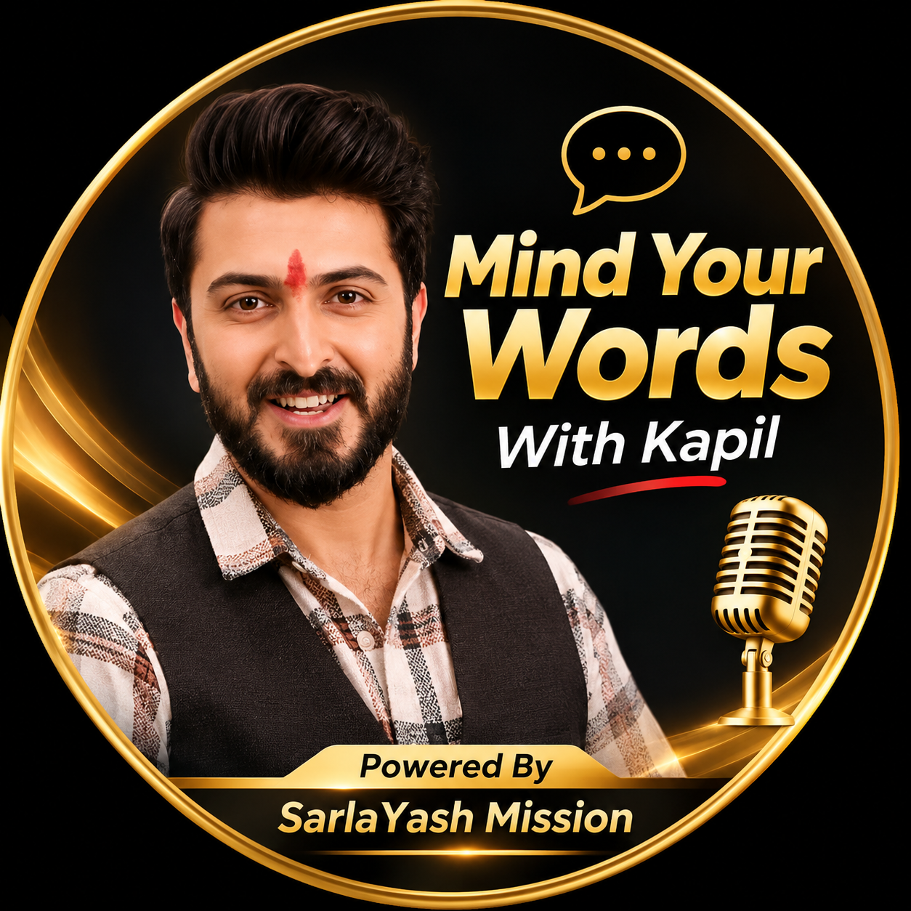

Words open doors.
Build the language to walk through them. One word at a time.
Speak with clarity. Work with confidence.
Explore 26 essential workplace words through real-life scenarios, quick challenges, and practical examples. Complete every level to earn your Professional English certificate.
Your in-app voice coach
Listen to a professional English example, say it aloud, and get instant feedback on the words your browser hears. The coach highlights words to practise and reads guidance back to you.
Microphone starts only when you tap Speak. Speech recognition depends on browser support and may need internet; read-aloud remains available.
Workplace Practice Studio
Write or speak through realistic work situations. Get a transparent coaching checklist, then compare with a sample response.
Scenario
Dictation uses your browser's speech recognition and may send audio to its recognition provider. It starts only when you tap the microphone. You can type instead.
Your learning path
Six chapters. Twenty-six words. One confident communicator.
Words worth watching
Keep learning with Kapil
Follow the conversation, grow your network, and explore the Employability Universe.
With Kapil
Clarity, communication, mindset, and career insights for students and future leaders.
Preview channel ↗
f FacebookStay connected with Mind Your Words With Kapil, powered by SarlaYash Mission.
Visit Facebook ↗to work
Follow the professional page for workplace communication and career growth.
Visit LinkedIn ↗Universe
Explore interview practice, aptitude, communication, technology, and career readiness.
Explore universe ↗Mock assessment arena
Five full-length practice sets · 25 questions each · instant explanations
Your badge cabinet
0 earnedLearning completion record
PRINTABLE · SHAREABLEYour learning completion record unlocks after all six A–Z levels. Earned badges are available as PNG or PDF. This is a self-paced completion record from this browser; it is not accredited, identity-verified, or independently verifiable. Use Reset profile before switching learners on a shared device.